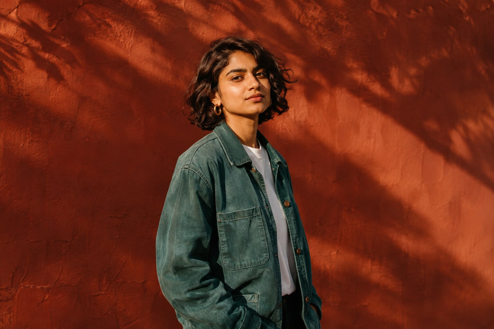

<!doctype html>
<html lang="en">
  <meta charset="utf-8" /><meta
    name="viewport"
    content="width=device-width,initial-scale=1,viewport-fit=cover"
  /><meta name="theme-color" content="#18221d" /><title>
    Stillroom · Camera studio</title
  ><link rel="stylesheet" href="studio.css" />
  <header>
    <strong><i>◉</i> Stillroom.</strong><a href="demo/">Original walkthrough</a>
  </header>
  <main>
    <section class="studio">
      <div class="bar">
        <span id="badge">CAMERA OFF</span
        >
      </div>
      <div class="stage">
        <div id="frame">
          <canvas id="photo"></canvas>
          <div id="poseGuide" hidden></div>
          <i id="target" hidden></i><span
            id="inframe" role="status"
            hidden
          ></span><button id="dismiss" hidden aria-label="Dismiss suggestion">×</button>
          <div class="intro" id="intro">
            <small>CAMERA STUDIO</small>
            <h1>Find your frame.</h1>
            <p>
              Tap what you want to photograph.
            </p>
            <div class="entry">
              <button id="start">Start camera</button>
              <button id="practice">Practice with samples</button>
            </div>
          </div>
        </div>
      </div>
      <div class="deck">
        <button id="flip" disabled>Flip</button
        ><button id="capture" disabled aria-label="Take photo"><b></b></button
        ><button id="stop" disabled>End</button>
      </div>
    <p id="message" role="status"></p></section>
    <div id="alternatives"><button id="creative" hidden></button><button id="previous" hidden> Earlier view</button></div><details id="info"><summary>Camera info</summary><aside><label
          >Capture format
          <select id="goal">
            <option>Space</option>
            <option>Detail</option>
            <option>Portrait</option>
            <option>Profile</option>
            <option>Social</option>
            <option>Video</option>
          </select></label
        >
      <small>SHOT GUIDE</small>
      <h2 id="heading" aria-live="polite">Portrait session</h2>
      <p id="hint">Your camera feed stays on this device.</p>
      <div id="scout" hidden>
        <label>What matters? <select id="intent"><option>Overall scene</option><option>Surface</option><option>Layers</option></select></label>
        <button id="best" hidden>Show strongest view</button>
        <details id="manual"><summary>Compare two views manually</summary><button id="angle">Save angle A</button>
        
        <div id="choices"></div>
        <button id="clearAngles" hidden>Clear angles</button></details><button id="sampleNext" hidden>Switch sample view</button>
      </div>
      <div id="poses" hidden><button id="nextPose">Suggest a variation</button></div>
      <div class="options">
        <button id="pose" hidden>Hide pose guide</button
        ><button id="expose" hidden>Try brighter exposure</button>
      </div>
      <hr />
      <label class="toggle"
        ><input id="coach" type="checkbox" checked /> Visual coaching</label
      >
      <label class="toggle"><input type="checkbox" id="assist" checked> Auto camera assist</label><p id="hardware" role="status"></p><details><summary>Photography sources</summary><a href="https://github.com/shubhambhavsar/Stillroom/blob/main/app/RESEARCH.md">Pose data, photography guidance and credits</a></details><p id="health" role="status">
        Camera permission is requested when you start.
      </p>
      
    </aside></details>
  </main>
  <video id="source" muted autoplay playsinline hidden></video>
  <dialog id="review">
    <h2>Review your shot</h2>
    <p id="dimensions"></p>
    <video
      id="clip"
      playsinline
      controls
    ></video>
    <div>
      <button id="again">Back to camera</button
      ><button id="tryAlternative">Try a variation</button><a id="save" download>Download</a>
    </div>
  </dialog>
  <script type="module" src="app/camera.js"></script>
</html>
